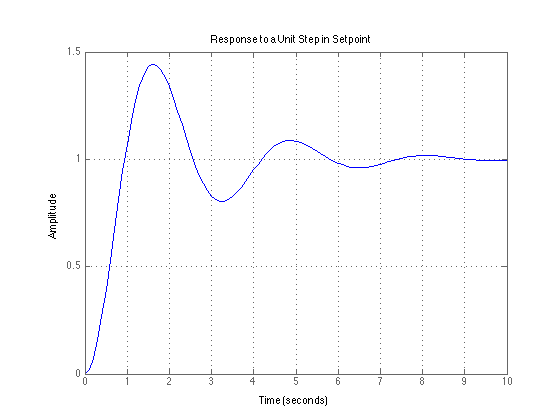
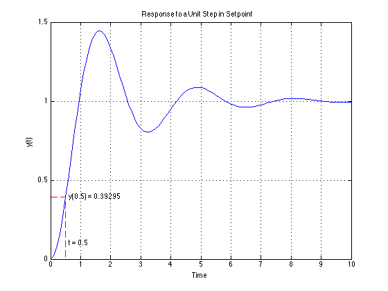

Problem 11.05
File: Ch11_P05.m
-------------------------- SOLUTION --------------------------
Contents
Solution Part (a). Y(s)/Ysp(s)
Step 1. Open loop transfer functions
Gc = tf([1],[1]); Gv = tf([2],[1]); Gd = tf([2],[1 1 0]); Gp = Gd; Gm = tf([1],[1]); Km = Gm;
Step 2. Develop closed-loop transfer functions
Hyd = Gd/(1 + Gp*Gv*Gc*Gm); Hyr = Gp*Gv*Gc*Km/(1 + Gp*Gv*Gc*Gm); display(Hyr);
Hyr =
4 s^2 + 4 s
-------------------------
s^4 + 2 s^3 + 5 s^2 + 4 s
Continuous-time transfer function.
Solution Part (b). y(infinity)
t = 0:0.1:10; step(Hyr,t); title('Response to a Unit Step in Setpoint'); grid displaytable(dcgain(Hyr),'Steady State Unit Step Response = ');
Steady State Unit Step Response = 1
Solution Part (c). Offset
displaytable(dcgain(Hyr)-1,'Steady State Offset = ');
Steady State Offset = 0
Solution Part (d). Response at t = 0.5
t = 0:0.1:10; y = step(Hyr,t); plot(t,y); xlabel('Time'); ylabel('y(t)'); title('Response to a Unit Step in Setpoint'); grid displaytable(dcgain(Hyr),'Steady State Unit Step Response = '); z = y(find(t==0.5)); hold on plot([0.5 0.5 0],[0 z z],'r--'); text(0.6,0.1,'t = 0.5'); text(0.6,z,['y(0.5) = ',num2str(z)]); hold off;
Steady State Unit Step Response = 1
Solution Part (e). Is the closed-loop response oscillatory?
The step response is underdamped but not oscillatory.